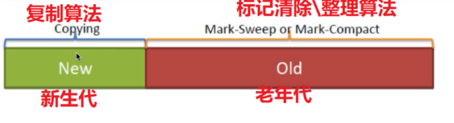

原文连接:https://www.cnblogs.com/yichunguo/p/12012841.html
垃圾收集 Garbage Collection 通常被称为“GC”， 在jvm 中，程序计数器、虚拟机栈、本地方法栈都是随线程而生随线程而灭，栈帧随着方法的进入和退出做入栈和出栈操作，实现了自动的内存清理，因此，我们的内存垃圾回收主要集中于 java 堆和方法区中，在程序运行期间，这部分内存的分配和使用都是动态的！
@
既然是垃圾回收，那肯定要知道什么是垃圾了是吧，我相信哪一天落魄java开发宜春小哥哥去捡垃圾维持生活，哈气、一juo、弯腰、开盖、倒水，一气呵成我闭着眼，把广东靓仔没喝完的快乐肥宅水错当垃圾捡了，这广东靓仔还不得打人？是的，而JVM的垃圾收集的前提就是明确啥是垃圾！JVM首先会进行一系列计数算法判断是不是垃圾。在JVM认为是否是垃圾的评判标准为对象是否存活，对象存活就不是垃圾，不能进行回收，反之进行回收。
1、判断对象是否存活的JVM两种计数算法
判断对象是否存活的JVM两种计数算法主要有两种，分别是：引用计数、可达性分析计数算法。
一听到计数算法中有“ 算法 ”二字，小白童鞋发愣了：妈呀，数学不好，完了，不学了...咳咳咳，咋们不提算法，从咋们的日常生活开始着手，在我们平时一个东西经常没被使用，而且也用不上什么地方，那么这个东西可以说就是垃圾。其实在 Java 中也是如此，如果一个对象不可能再被引用，那么这个对象就是垃圾，应该被回收。就是这么简单粗暴，JVM两种计数算法就是这样子的，真的不复杂。
1.1、引用计数算法
根据我们生活上的思想，我们很容易想到使用引用计数的方法来判断垃圾。在一个对象被引用时加一，被去除引用时减一，这样我们就可以通过判断引用计数是否为0来判断一个对象是否为垃圾。这种方法我们一般称之为「引用计数法」。确实贼简单的一个思路也正是以为它的简单，从而存在缺陷，因此引用计数算法是这样定义的
1、引用计数：每个对象有一个引用计数属性，新增一个引用时计数加1，引用释放时计数减1，计数为0时可以回收。
2、正因方法简单，从而引用计数算法无法解决对象相互循环引用的问题。
小白童鞋可能不知道啥是对象循环引用，熊dei看图
1.2、可达性分析计数算法
首先声明一点：在实际开发语言比如java、C#等都是采用可达性分析计数算法判断对象是否存活！
可达性分析算法的定义如下：
可达性分析（Reachability Analysis）：从
GC Roots开始向下搜索，搜索所走过的路径称为引用链。当一个对象到GC Roots没有任何引用链相连时，则证明此对象是不可用的。不可达对象。
相信很容易看出，其实都很好理解，唯独GC Roots有点抽象，那啥是GC Roots呢？在Java语言中，GC Roots主要包括：
1、对象的引用，位于虚拟机栈中。
2、方法区中的静态引用。
3、本地方法栈中JNI的引用。【JNI一般指的是Native方法】
简单地说，GC Root 就是经过精心挑选的一些引用
像上面的循环引用的这种情况引用计数算法是无法进行GC掉的，而根搜索算法可以做到，因此引用计数算法存在缺陷！根搜索算法更好！
2、垃圾收集算法
以上内容概述了啥垃圾，接下来就要讲讲如何进行回收垃圾！在生活中我们收集垃圾，可以一边走一边扫，也可以把垃圾全都扫到一起再一次清理。在JVM中，类似生活，提供了一系列的垃圾收集算法。
而且我们还经常能看到垃圾分类，分成可回收垃圾，和不可回收垃圾，但是从某一意义上来讲，还都是垃圾，如果人人都遵守垃圾分类规则，我估计以后收破烂的大叔大妈都天天从可回收垃圾桶下手了，其实在JVM中也类似如此，JVM采取了分区、分代收集的思想。
常见的垃圾回算法：标记清除算法、复制算法、标记整理算法、分代收集算法。
2.1、标记清除算法复制算法
标记清除算法。从名字可以看到其分为两个阶段：标记阶段和清除阶段。一种可行的实现方式是，在标记阶段，标记所有由 GC Root 触发的可达对象。此时，所有未被标记的对象就是垃圾对象。之后在清除阶段，清除所有未被标记的对象。标记清除算法最大的问题就是空间碎片问题。如果空间碎片过多，则会导致内存空间的不连续。虽说大对象也可以分配在不连续的空间中，但是效率要低于连续的内存空间。
2.2、复制算法（Copying）
复制（Copying）算法。复制算法的核心思想是将原有的内存空间划分为大小相等的两块，每次只使用一块，在垃圾回收时，将正在使用的内存中的存活对象复制到未使用的内存块中。之后清除正在使用的内存块中的所有对象，之后交换两个内存块的角色，完成垃圾回收。复制算法的缺点是要将内存空间折半，极大地浪费了一半内存空间。因此现在的商业虚拟机都使用这种复制算法来进行新生代的垃圾收集！因为在对象存活率高的时候，复制算法就显得效率低下
2.3、标记-整理算法（Mark-Compact）
关于标记-整理算法还有一种叫法是标记压缩算法，知道其说的同一者就好了。
标记整理算法。标记整理算法可以说是标记清除算法的优化版，其同样需要经历两个阶段，分别是：标记阶段、整理阶段。在标记阶段，从 GC Root 引用集合触发去标记所有对象，和标记清除算法中的标记阶段是一样一样的。在整理阶段，其则是将所有存活的对象整理在内存的一边，之后清理边界外的所有空间。因此，标记-整理算法（Mark-Compact）不会产生内存碎片，但是会多花点时间用在整理（Compact）上面！
2.4、分代收集算法（Generational Collection）
“分代收集”（Generational Collection）算法，把Java堆分为新生代和老年代，这样就可以根据各个年代的特点采用最适当的收集算法。在新生代中，每次垃圾收集时都发现有大批对象死去，只有少量存活，那新生代选用复制算法，只需要付出少量存活对象的复制成本就可以完成收集。而老年代中因为对象存活率高、没有额外空间对它进行分配担保，老年代就使用“标记-清理”或“标记-整理”算法来进行回收。

2.5、四种回收算法总结
标记清除算法
分为标记阶段和清除两阶段。标记清除算法最大的问题就是空间碎片问题。比较适合在存活对象比较多的情况。
复制算法（Copying）
复制算法的缺点是浪费了一半内存空间。现在的商业虚拟机都使用这种复制算法来进行新生代的垃圾收集！因为在对象存活率高的时候，复制算法就显得效率低下比较适合存活对象比较少的情况。
标记整理算法（Mark-Compact）
标记整理算法是标记清除算法的优化版，标记-整理算法（Mark-Compact）不会产生内存碎片，但是会多花点时间用在整理（Compact）上面！
分代收集算法（Generational Collection）
新生代选用复制算法，老年代使用“标记-清理”或“标记-整理”算法来进行回收。
3、垃圾回收算法小结
借用大佬整理的一张图：
如果本文对你有一点点帮助，那么请点个赞呗，谢谢~
最后，若有不足或者不正之处，欢迎指正批评，感激不尽！如果有疑问欢迎留言，绝对第一时间回复！
欢迎各位关注我的公众号，里面有一些java学习资料和一大波java电子书籍，比如说周志明老师的深入java虚拟机、java编程思想、核心技术卷、大话设计模式、java并发编程实战.....都是java的圣经，不说了快上Tomcat车，咋们走！最主要的是一起探讨技术，向往技术，追求技术，说好了来了就是盆友喔...